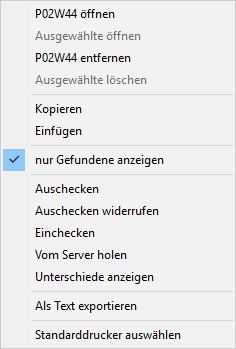
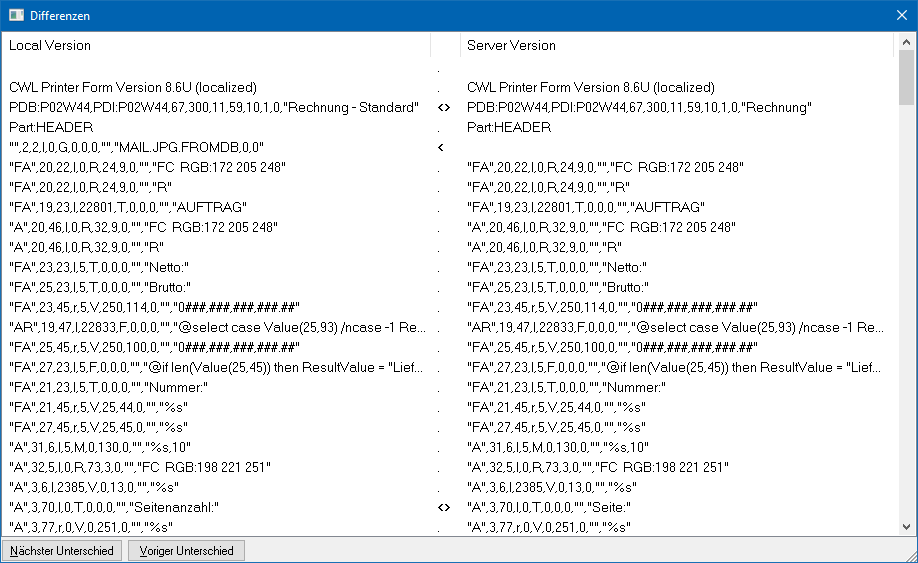

Im Fenster "Formularliste" hat die rechte Maustaste folgende Funktionen:

Ø Formular öffnen
Mit dieser Option wird das ausgewählte Formular geöffnet.
Ø Ausgewählte öffnen
Diese Option steht nur dann zur Verfügung, wenn mehrere Einträge markiert sind. Hierdurch werden alle ausgewählten Formulare zur Bearbeitung geöffnet werden.
Ø Formular entfernen
Mit dieser Option wird das ausgewählte Formular auf den Auslieferungsstand zurückgesetzt - d.h. durch Anwahl dieser Option werden alle durchgeführten Änderungen entfernt und das Originalformular ist wieder vorhanden.
Ø Ausgewählte löschen
Diese Option steht nur dann zur Verfügung, wenn mehrere Einträge markiert sind. Hierdurch werden alle ausgewählten Formulare gelöscht und in ihren Originalzustand versetzt werden.
Ø Kopieren
Mit dieser Option kann ein komplettes Formular kopiert werden.
Ø Einfügen
Mit dieser Option kann ein zuvor kopiertes Formular eingefügt werden. Ist das Formular bereits vorhanden, wird eine entsprechende Abfrage gezeigt. Sinnvollerweise wird das Kopieren bzw. Einfügen nur für das Erstellen von lokalen Formularen verwendet werden.
Ø Nur Gefundene anzeigen
Mit Hilfe dieser Option kann definiert werden, ob bei Nutzung des Felds "Suchbegriff" nur die passenden oder alle Formulare angezeigt werden sollen.
Hinweis
Wenn alle Formulare angezeigt werden sollen, dann werden die "gefundenen" Formulare in der Liste selektiert. Zwischen den Treffern kann per F3 (vorwärts) und SHIFT + F3 (rückwärts) navigiert werden.
Ø Auschecken
Mit dieser Option wird das Formular als "ausgecheckt" gekennzeichnet. D.h. das Formular wird dem entsprechenden Benutzer zugeordnet. Versucht nun ein anderer Benutzer (in einer Netzwerkumgebung) das gleiche Formular zu ändern bzw. zu speichern, bekommt dieser einen entsprechenden Hinweis, dass das Formular bereits von einem anderen Benutzer in Bearbeitung ist. Außerdem steht das Formular dem Benutzer exklusiv zur Verfügung, d.h. gespeicherte Änderungen werden nicht sofort im Netzwerk verteilt, sondern erst mit dem Einchecken.
Ø Auschecken wiederrufen
Diese Option ist nur bei einer Netzwerkinstallation verfügbar. Mit dieser Option wird der Status "ausgecheckt" wieder zurückgesetzt, d.h. das Formular auf die zuletzt eingecheckte Version bzw. die originale Version zurückgesetzt wird, wodurch alle Änderungen gehen verloren.
Ø Einchecken
Mit dieser Option werden alle durchgeführten Änderungen am Server zurückgeschrieben - bei einer Netzwerkinstallation werden die Änderungen auf alle Workstations verteilt.
Ø Vom Server holen
Mit dieser Option (ist nur bei einer Netzwerkinstallation verfügbar) kann jedes beliebige Formular (unabhängig vom Status) vom Server übernommen werden. Damit werden eventuell lokal vorgenommene und noch nicht eingecheckte Änderungen überschrieben.
Ø Unterschiede anzeigen
Mit dieser Option werden Unterschiede zwischen dem aktuell geänderten Formular und dem Original-Formular (bzw. dem Serverformular) angezeigt.

Die Änderungen werden mit den folgenden Symbolen dargestellt:
ü - Unterschied in der Zeile
ü - Zeile existiert in der Änderung nicht mehr
ü - Zeile existiert nur in der Änderung
Mit den Buttons "Nächster Unterschied" und "Voriger Unterschied" kann zu den jeweiligen Einträgen gewechselt werden, wobei diese Einträge dann auch entsprechend markiert werden.
Ø Als Textdatei exportieren
Mit dieser Option kann das Formular als Text-Datei abgespeichert werden. Damit bekommt die Datei die Erweiterung *.PDF.
Hinweis
Es handelt sich hierbei um eine normale Text-Datei, die z.B. mit Notepad geöffnet werden kann und um keine Acrobat Reader-Datei.
Achtung
Wenn das Formular aus einer WinLine Version 9.0 Build 9002 oder höher exportiert wird und nachfolgend in eine WinLine mit niedrigerer Versionsnummer importiert werden soll, dann muss die Text-Datei in ANSI-Formatierung erzeugt werden. Dazu wird im "Speichern Als"-Dialog beim Feld "Speichern als Typ" das Format "ANSI PDF-Files (*.PDFANSI) beim Exportieren gewählt.
Ø Standarddrucker auswählen
Mit dieser Option kann für alle ausgewählten Formulare ein Standarddrucker hinterlegt werden. Das hat den Vorteil, dass nicht jedes Formular extra geöffnet werden muss, nur weil ein fixer Drucker hinterlegt werden soll.